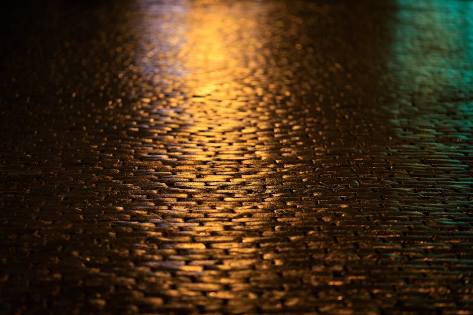

Sillutuse veeprobleemid — vajumus, veelombid, niiskuskahjustus
Sillutuse veeprobleem on Eesti kliimas number-üks põhjus, miks tänavakivi laguneb juba 3–5 aasta jooksul. Vajumus, veelombid ja maja sokli niiskuskahjustus tulenevad enamasti samadest vigadest: vale kalle, õhuke killustikalus või sademevee suunamine maja poole. Selles artiklis näitame, kuidas probleemi diagnoosida ja parandada — koos suunaliste hindadega 2026. aastaks.
Kolm peamist veeprobleemi sillutusel
Veega seotud kahjustused tekivad alati järgmistest põhjustest: pinnas vajub vee tõttu ebaühtlaselt, vesi seisab pinnal kalde puudumise tõttu või vesi liigub vale suuna — maja seina ja sokli poole. Igal probleemil on oma diagnostika ja parandusviis.
1. Vajumus — alus on alaprojekteeritud
Kui sillutus vajub auku 2–4 cm sügavuselt, on tegemist killustikalusealuse probleemiga. Eesti savise pinnase puhul peab killustikalus olema vähemalt 25 cm; raskel autoga sõidetaval pinnal 30–35 cm. EVS 901-3 standard nõuab tihendamist 2 kihina (igaüks 15 cm) vibroplaadiga vähemalt 95% tihedusega.
2. Veelombid — kalle on vale
Standardne kalle peab olema 2–3% (2–3 cm meetri kohta) majast eemale. Alla 1,5% kalde puhul jääb vesi pinnale seisma, eriti pärast freezimist-sulamist tsükleid. Tasaste platside puhul kasutatakse ridaglinkide süsteemi (joonlinkide vahekaugus 4–6 m).
3. Niiskuskahjustus soklil — vesi voolab maja poole
Kõige kallim ja salakavalam probleem: kui sillutuse kalle on tehtud maja seina suunas (või on horisontaalne ja maja poolne pinnas on madalam), valgub sademevesi otse sokli äärde. Tagajärjeks niiske kelder, hallitus, sokli krohvi mahakukkumine — paranduskulud algavad 2 000–8 000 €.
Diagnostika — kuidas tuvastada veeprobleemi põhjus
Enne paranduse tellimist tasub teha lihtne kontroll. Kõige odavam viga on vale diagnostika, kus parandatakse ainult pealmist kihti ja probleem kordub aasta pärast. Vaata vana sillutise eemaldamise artiklit kui plaanid täisrenoveeringut.
| Sümptom | Tõenäoline põhjus | Parandusmeede | Suunav hind |
|---|---|---|---|
| Punkti vajumus (auk 2–5 cm) | Lokaalne alusprobleem, üks kivi vajunud | Kivi ülestõstmine, killustik täide, tagasi | 35–55 €/m² |
| Suur vajumusala (5+ m²) | Õhuke killustikalus, halb tihendamine | Täielik lahtivõtmine, uus alus 25–30 cm | 45–75 €/m² |
| Püsivad veelombid | Vale kalle (alla 1,5%) | Pinna ümberprofileerimine + uus laotamine | 40–60 €/m² |
| Niiske sokkel, hallitus keldris | Kalle maja poole, vihmaveetorud sillutuse all | Drenaaž + kalde muutmine + sokli isolatsioon | 65–110 €/m² + drenaaž |
| Kivivahed laienevad | Liiv on välja uhutud, vuugiprobleem | Vuugiliiva taastäide (polümeerliiv) | 4–8 €/m² |
Kuidas vältida veeprobleeme uuel sillutusel
Uue sillutuse paigaldamisel saab 95% veeprobleemidest vältida õige projekteerimise ja paigaldusprotsessiga. Kogemus näitab, et lisakulu korrektse aluse ja kalde tegemisel on 8–15% kogu maksumusest — kuid säästab 5–10 aasta perspektiivis 60–80% remondikulu.
Õige killustikaluse paksus pinnase järgi
- Liivpinnas (drenažeeriv): 20–25 cm killustikku (frak 4/32 või 0/32)
- Savine pinnas (probleemne): 30–35 cm + geotekstiil aluseks
- Sõidutee autodele: 35–40 cm + tugevdatud äärekivi (EVS-EN 1340)
- Tehniline platsi alus (raskeveokid): 45–60 cm + stabiliseerimine
Õige kalle ja veejuhtimine
Kalle peab olema alati majast eemale, vähemalt 2% (eelistatult 3%). Suurte alade puhul (üle 50 m²) tuleks lisada joonliink või punktliink iga 6–8 meetri tagant. Vihmaveetorude veed peavad olema suunatud kas sademeveekanalisse või vihmaveesäilitisse — mitte kunagi otse sillutuse alla.
Vuugitäide — esimene veebarjäär
Tavaline kvartsliiv (frak 0/2) on odavaim, kuid uhutakse vihmaga 2–3 aasta jooksul välja. Polümeerliiv (PolyBind, RompoxEasy) maksab 6–10 €/m² rohkem, kuid kestab 8–12 aastat ja takistab umbrohu kasvu vuukides. Vaata võrdlust graniidi ja betoonkivi vahel — graniitkivi peab kauem just tänu väiksematele vuukidele.
Vajumuse parandamine — samm-sammuline protsess
Kui sillutus on juba vajunud, ei aita pealiskaudne täiteliiv. Probleem kordub 6–12 kuu jooksul. Korrektne parandus tähendab kivide ülestõstmist, aluse korrastamist ja taaspaigaldust.
Paranduse etapid (lokaalne, kuni 5 m²):
- Kivide ülestõstmine — markeerimine, eemaldamine kõvale alusele (1 päev)
- Aluse audit — kontroll, kui sügavale ulatub probleem (0,5 päeva)
- Killustiku lisamine + tihendamine — vibroplaadiga 2 kihina (0,5 päeva)
- Kalde taastamine — 2–3% majast eemale, kontroll vesiloodiga (0,5 päeva)
- Kivide tagasipanek + vuugiliiv — vana liiva väljapesu, uus polümeerliiv (1 päev)
Lokaalse paranduse kogukestus 2–3 päeva, sõltuvalt ilmast. Suuremate alade puhul vt kahepäevase paigalduse võimaluste artiklit.
Niiskuskahjustus maja sokli juures — eraldi probleem
Kõige tõsisem veeprobleem on see, mida ei näe — kui sillutuse kalle suunab vee maja vundamendi juurde. Sümptomid: niiske kelder, krohvi mahakukkumine sokli alaosas, hallitus toa nurkades sügisel ja kevadel. Lahendus pole odav, kuid edasilükkamine ainult süvendab kahju.
| Lahendus | Kus kasutada | Suunav hind | Eluiga |
|---|---|---|---|
| Pinna ümberprofileerimine | Kalle on lähedal 0%, sillutus terviklik | 40–60 €/m² | 15–25 aastat |
| Drenaažitoru paigaldus sokli äärde | Sügav probleem, kõrge põhjavesi | 45–75 €/jooksev meeter | 20–30 aastat |
| Sokli hüdroisolatsiooni uuendus | Krohv on mahakukkunud, niiske kelder | 30–60 €/m² seinapinnale | 15–20 aastat |
| Sademeveekanali ühendus | Vihmaveetorud ilma süsteemita | 700–2 000 € paketis | 25+ aastat |
Sokli niiskuskahjustusi kõige sagedasema põhjusena nimetatakse vihmaveetorusid, mis lasevad veed välja otse sillutuse äärde. Lihtne lahendus: vihmaveetoru pikendus 1,5–2 meetrit eemale või ühendus drenaažitorusse. Maksumus 80–250 €/toru — väike investeering, mis hoiab ära tuhandete eurode kahju.
Hinnad ja garantii 2026. aastal
Veeprobleemide parandamise hinnad sõltuvad probleemi sügavusest ja pindalast. Suunavad hinnad B Grupp pakub kindlate suurusvahemikega projektidele kuni 2 500 m² või 200 000 € maksumusega. Suuremate tööde puhul küsi eraldi pakkumine. Kasuta kalkulaatorit suuruslikuks hinnangu saamiseks — saad numbrid 1 minutiga.
Tüüpilised pakkettide hinnad:
- Diagnostika ja audit — 0 € (tasuta, koos pakkumisega)
- Lokaalne vajumuse parandus (kuni 5 m²) — alates 280 € (tunnipakk + materjalid)
- Kalde ümberprofileerimine — 40–60 €/m²
- Täisrenoveerung (kuni 100 m²) — alates 45 €/m², garantiiga 2 aastat
- Drenaažitoru ja kalde korrektsioon — 1 500–4 500 € sõltuvalt pikkusest
Suurematel objektidel pakume järelmaksu 6–36 kuud Bigbank, Inbank ja LHV kaudu. Vaata ka üldist hinnaülevaadet ja kiire paigalduse võimalusi kui tahad probleemi lahendada enne talve.
Korduma kippuvad küsimused
Kui kiiresti saab vajunud sillutuse parandada?
Lokaalne vajumuse parandus kuni 5 m² ulatuses kestab 2–3 tööpäeva, sõltuvalt ilmast. Suurema ala (20–50 m²) täisrenoveering 5–8 tööpäeva. Garantii uuele tööle 2 aastat.
Mis kalle peab olema sillutusel?
Standardne kalle on 2–3% (2–3 cm meetri kohta) majast eemale. Alla 1,5% jääb vesi pinnale seisma. Sõidualade puhul soovitame 3% kalle. EVS 901-3 standard määrab miinimumiks 1,5%, kuid Eesti kliimas (külmumistsüklid) töötab praktiliselt ainult 2%+ kalle.
Kas sokli niiskuse probleemi saab lahendada ilma sillutust eemaldamata?
Mõnel juhul jah — kui vihmaveetorud pole õigesti ühendatud, piisab nende pikendamisest või drenaažitorusse ühendamisest (80–250 €/toru). Kui aga sillutuse enda kalle on maja poole, tuleb sillutust ümber laduda — keskmiselt 40–60 €/m².
Miks vuugiliiv kaob ja kuidas seda vältida?
Tavaline kvartsliiv uhutakse vihmaga välja 2–3 aastaga, eriti kalde all olevatel aladel. Polümeerliiv (PolyBind, RompoxEasy) maksab 6–10 €/m² rohkem, kuid kestab 8–12 aastat, takistab umbrohu kasvu ja talub kõrgsurvepesu. Soovitame uutel objektidel kohe polümeerliiva.
Kas vajumuse põhjuseks võib olla maa-alune leke?
Jah, kuid harva. Kui vajumus tekib alale, kus pole liikluskoormust ja eelmistest aastatest probleemi pole olnud, tasub kontrollida veetoru või kanalisatsiooni lekkeid. Sellisel juhul on parandus eelnevalt torutööga, alles seejärel sillutuse taastamine — kogumaksumus 800–3 500 € sõltuvalt sügavusest.